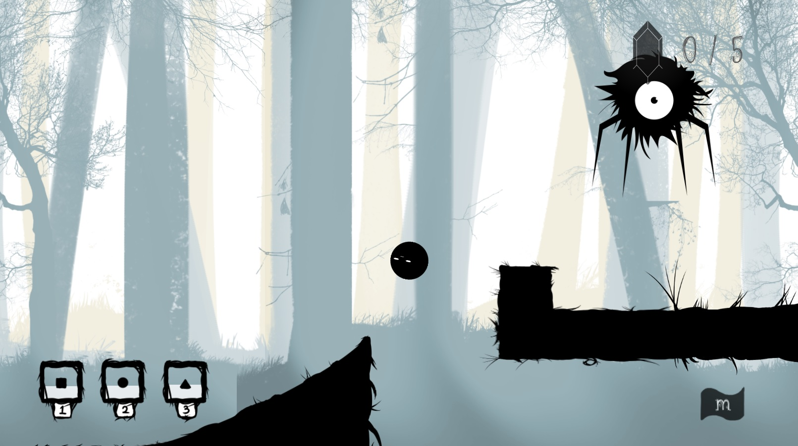
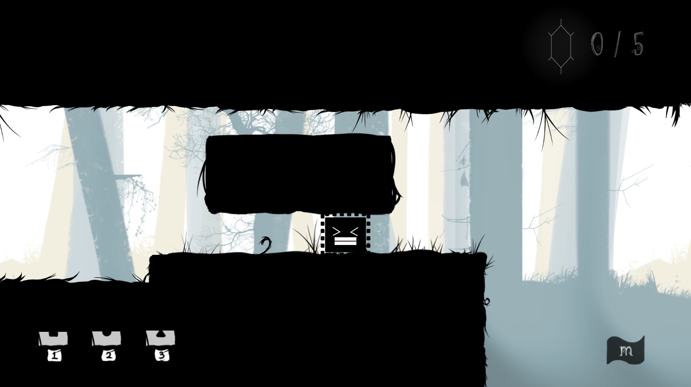

Welcome! My name is Kenny Cheung. I am a student in the SFU Interactive Art & Technology program! I am passionate about 3D modeling and game design. Please feel free to browse around my porfolio!
Adventure of Blobby is an 2D side scroller platform adventure game with its gameplay built around the unique mechanic of shape shifting. Here, the player acts as little Blobby who got left behind by its family and becomes lost in the mysterious forest. Throughout the game, Blobby has to overcome dangerous beast and difficult puzzle to reach to its family. Through the shape shifting mechanic which allow blobby to transform into different shapes, players can bring Blobby back to his family by utilizing the special properties associated with each of its shape form.
In this project, my main role was the programmer. I had to build the game mechanics such as character transforming, parallax background, the interactive obstacles elements and many more. With some help from my teammates, the effort transforms into smooth character control and polished visual effect.
We have encountered numerous problem with the character transformation regarding each shape transforms’ unique properties. The blocky style provide the player immune to crushes, and allow them to slam down on top of enemies to defeat them. Whereas the spiky style allow user to stay still and defeat enemies dropping down onto your sharp spike top. The main problem is associated with the ball form, which is supposed to allow users to roll and move much faster while having a lighter and smaller body to pass through tight tunnels. In order to provide the feel of smooth rolling, we had to temporarily switch the method of moving the character across the along the map to a different one. We switched from using x = x+1 to unity rigidbody.addForce. One is constant velocity change while the other allow dynamic speed ramp. Addforce also provide free form rotation for the ball rolling effects which we did not expect. In short, in the process of finding a solution for a specific problem, we researched online and found a unique approach to solve it, which surprisingly rewarded with us with awesome surprise. Because of this experience, I am now eager to and enjoy finding solutions for specific problems.


Cactus Und Panzer is an animation modeled and animated in Autodesk Maya. The story take places in a wasted desert located in North Africa. It documented the intense battle between the German Sherman tank and the enemy Tiger Tank. The Tiger tanks has the advantage of being heavily armed with thick armor and deadly weapon. Whereas the Sherman tank is designed as a quick and swift tank with relatively better movement speed with the trade off of lacking armor and firepower. The battle starts with Sherman manuver around the Tiger to dodge its power shots while shooting back. The close battle lead up to the climax when the track of the Tiger is damaged, which stopped it from moving. Simultaneously, the Sherman is coming closer and closer with gradually increasing in fire precision. The critical shot ended the battle was the well placed shot from the Tiger, brutally blown the Sherman tank into pieces.
In this project, I contributed in the modeling and animation process. I am responsible to create the detailed model of the tanks and animate the them according to the script we established.
I am filled with passion when I model the tanks. Each detail pieces require different workflows in maya in order to achieve the required shape. For example, the tank track is a complicated shape combined with multiple steel plates. Not only do we have to model a highly detailed steel plate, we also need to align the plates into the shape of a ellipse.
One of the problem was to rig it so that when it is rotated, the track pieces follow a path to maintain the overall shape of the ellipse. The method we used was using the “wire” tool. Its principle was to bind the circular aligned track to a circular wire. After that is done, we will be able to control its vertex points and manipulate its shape. With that setup, the rotation will always follow the same shape manipulated by the wire.
Another one of the memorable difficulties was associated with animation. To animate objects and provide liveliness, we trained ourselves to use the graph animation editor in order to achieve natural movement recoil. They are small detail that are not negligible. If we look at how objects moves in real life with momentum, when an object changes its movement direction or stops, there are most likely recoil that makes it goes back and forth when stopping. With graph editor, we were able to refine our animation curves into smooth lines that revolves around the origin back and forth. As a result, we achieved more lively animation that can communicate an object's weight and momentum.
We understood the importance of working out details through the iterate process. For my future project, I tend to research heavily on whether if the method